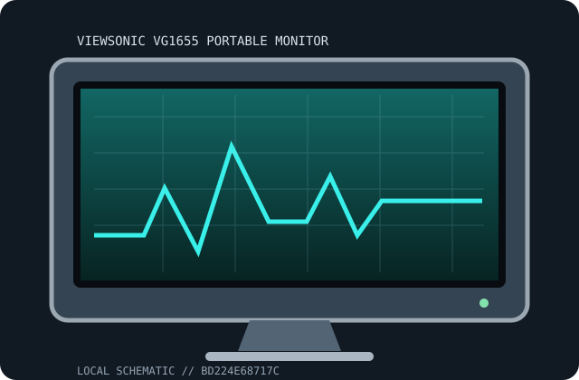

[ INDIVIDUAL COMPONENT // DISPLAYS ]
ViewSonic VG1655 Portable Monitor
15.6-inch portable IPS monitor with kickstand Portable displays.

IDENTIFICATION: Match complete model suffix and region to the rear label and manufacturer manual. Revision-sensitive details are qualified rather than inferred from a similar product.
Specifications
| Catalog subcategory | Portable displays |
|---|---|
| Exact product / family | ViewSonic VG1655 Portable Monitor |
| Panel / tube | 15.6-inch IPS LCD, 1920 × 1080 |
| Native timing / refresh | 1920 × 1080 at 60 Hz |
| Inputs | Two USB-C DP Alt Mode, mini-HDMI, 3.5 mm audio |
| Power | USB bus power and pass-through behavior depend on exact model; draw/adapter rating must be checked against manual and label. |
| Stand / size | Diagonal shown above; stand feet, cover and supplied accessories depend on exact SKU. |
Revision, signal & host compatibility
Regional suffixes may change ports, touch, refresh and accessory bundle. Match the manual to the full rear-label model.
USB-C video requires DisplayPort Alt Mode on the host. Check the source, cable, power path and OS/driver support for touch; HDMI models may need separate power.
Preservation & repair notes
Protect the panel during transport, avoid cable strain, and test video, power and touch independently. Keep a known-good full-featured USB-C cable with the monitor.
Log serial/date label, accessories, signal chain, image condition, calibration, firmware and repair history. Use the correct manufacturer service procedure and qualified technicians for internal work.
Manufacturer manuals & sources
- ViewSonic — official support and documentation portalLocate the exact model manual/specifications here; the rear label and matching revision document govern power, modes and service.
- Model-specific manual catalog search: ViewSonic VG1655 Portable MonitorDocumentation discovery link. Verify any located guide against the exact model/revision before applying timings or repair instructions.